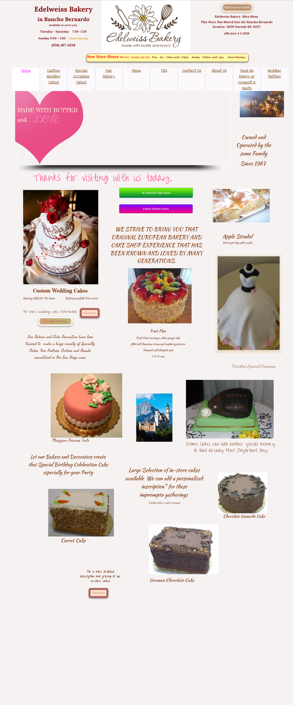
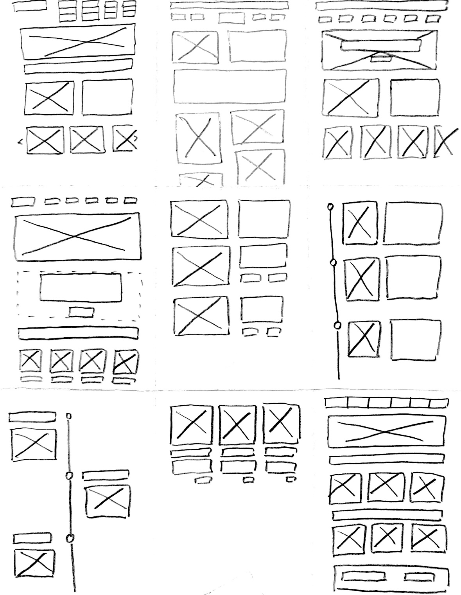
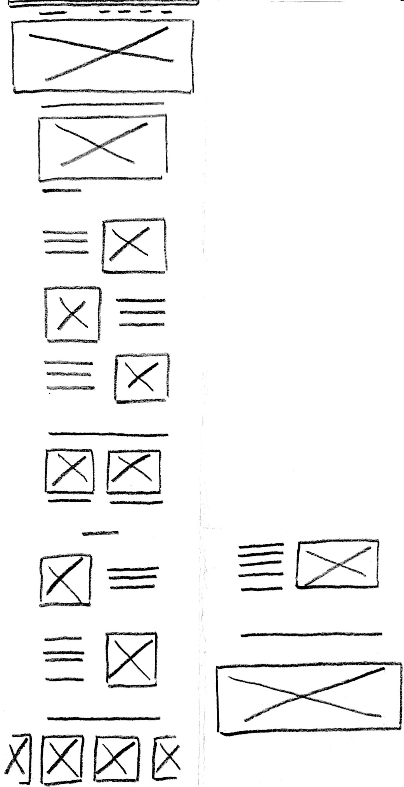
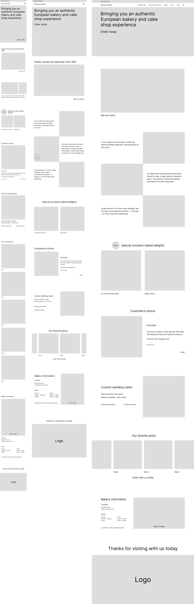
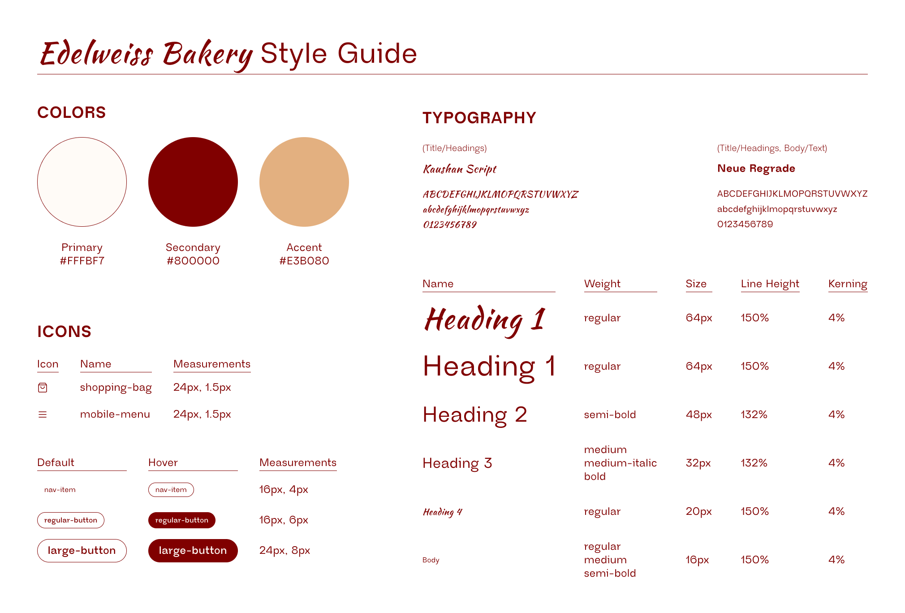
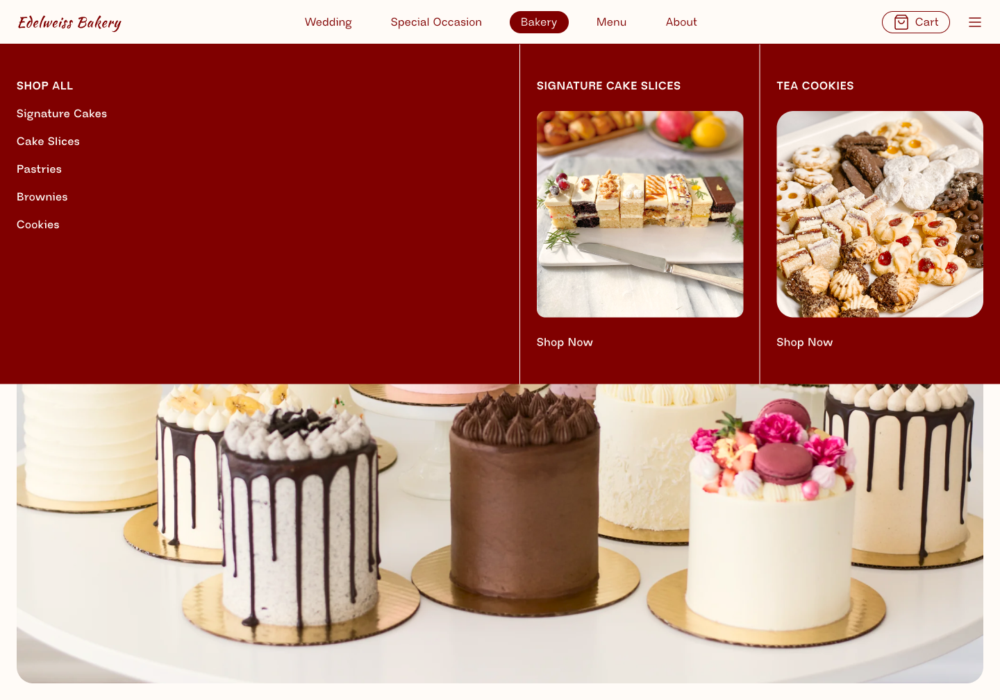

Edelweiss Bakery is a place I often frequented with my family growing up. They have been relying on the same website for a while and have only recently revamped their site. I found their origianl site through Wayback Machine.
Timeline
Feb 2024 - Mar 2024 2 weeks
Location
Providence, RI
Tools
Figma HTML/CSS
Problem
I remember seeing this website for the first time a few years ago and wanting to redesign it, so I'm happy to have gotten the chance to do so!
I do not have exact annotations because it would make the image difficult to read, so I'll be describing them instead.

Responsiveness
This site is not suitable for smaller devices because it does not change when the screen size decreases. Therefore, it would be extremely difficult for a smartphone user to navigate this site.
Layout
The layout is overall quite messay and there is no clear structure on how the images are positioned. The navigation has way too many buttons of varying importance. The website is not clean and is clearly outdated.
Fonts
There is a total of 7 fonts used on this page. The frequent use of script fonts decreases the website's readability.
Contrast
The buttons lack in contrast especially as well as some of the text in lighter colors. Buttons are extremely important because they should lead the user faster to the business goal.
Accessibility
The website scored an 80 on accessibility, using Google Lighthouse.Besides issues with contrast, all of the images lack alternate text to account for screen readers.
Wireframing
9 speed sketches

Final sketch

Lo-Fi Mockups

This new website tackles all the issues mentioned previously to a certain extent. The website will be responsive, high in contrast and alternate texts, and suitable in today's design trends.
Since many of the issues with the old website came with problems in the internal structure of it, it is difficult to annotate exactly what improvements have been made/what will be implemented. Although the new interface requires much more vertical scrolling, there is greater emphasis placed on the bakery's origin story and is more successful in buulding a connection with the audience - establishing ethos. The navigation is much cleaner and the content has been grouped under different tabs.
Hi-Fi Mockups
Style Guide

I created a style guide both based on the old website's color palette and typography while adding my own touch to it. In terms of photography, I aimed to find high-definition images that I then edited to reflect warmth and brightness. I also cropped some images in a scrappy way to emulate the homemade quality of this bakery.
Mockups ready for development
I attempted to preserve elements from the old website to the new one including messaging ad typography, as mentioned. While designing this website, I was curious as to how I could keep the essence of the old website without completely designing for a "different bakery." This was quite a challenge for me, and I believe there could have been better ways for me to achieve this through my designs, if given more time.

Final Designs
I was able to bring the accessibility score from an 80 to a 97!
Takeaways
Will add this + enhance my current case study for the final submission